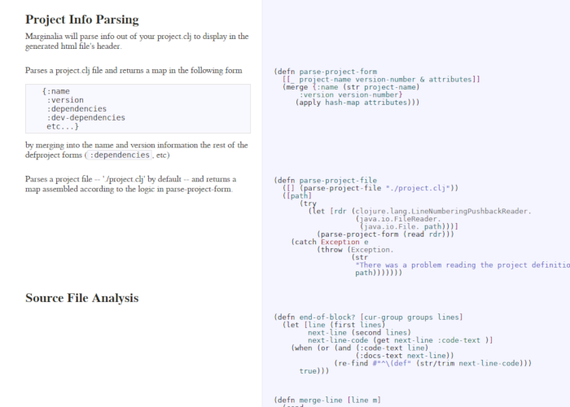
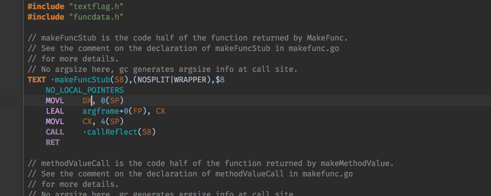

Singapore Clojure Meetup
June 2019
The practitioner of literate programming can be regarded as an essayist, whose main concern is with exposition and excellence of style.
—Donald E. Knuth
Such an author, with thesaurus in hand, chooses the names of variables carefully and explains what each variable means. He or she strives for a program that is comprehensible because its concepts have been introduced in an order that is best for human understanding, using a mixture of formal and informal methods that reinforce each other.
—Donald E. Knuth
Such an author, with thesaurus in hand, chooses the names of variables carefully and explains what each variable means. He or she strives for a program that is comprehensible because its concepts have been introduced in an order that is best for human understanding, using a mixture of formal and informal methods that reinforce each other.
—Donald E. Knuth
Such an author, with thesaurus in hand, chooses the names of variables carefully and explains what each variable means. He or she strives for a program that is comprehensible because its concepts have been introduced in an order that is best for human understanding, using a mixture of formal and informal methods that reinforce each other.
—Donald E. Knuth
While the phrase ultra-lightweight literate programming is used to describe Marginalia, it is in no way a tool for classical literate programming. That is, Marginalia is a linear documentation generator allowing no out-of-order reassembly of source.
— Marginalia README
lein marg and lein codox can co-exist.
** This is a heading
This is a normal paragraph.
** Here is a code block:
#+BEGIN_SRC clojure
(defn add [a b]
(+ a b))
#+END_SRC
C-RET adds a new heading.M-RET adds a new list item.M-LEFT promotes heading/list item.M-RIGHT demotes heading/list item.
< s TAB expands to:
#+BEGIN_SRC █
#+END_SRC
Cursor (█) where you are going to enter the language.
C-c ' switches to a buffer that contains only the contents of the snippet.
This buffer has all the right modes set, just as if you have opened and actual
file in that language. Then you can C-c ' again to go back to your original
document.
#+BEGIN_SRC clojure :tangle src/core.clj :mkdirp yes :comments link
#+END_SRC
:tangle specifies the filename this code block needs to be tangled in.:mkdirp yes instructs tangle to create directories as necessary.:comments link will surround tangled code with comments that refers back
to the original literate programming document. This information can also be
used to jump to the source if you are debugging inside Emacs.This code block contains a reference to another code block:
#+BEGIN_SRC clojure :noweb yes
(divide [numerator denumerator]
<<assert_not_zero>>
(/ numerator denumerator))
#+END_SRC
#+NAME: assert_not_zero
#+BEGIN_SRC clojure
(assert (not (zero? denumerator))) ;; <- hard-coded
#+END_SRC
C-c C-c to
execute.C-c C-v C-v creates a (read-only)
buffer for the current code block with all the references expanded. Good
for syntax checking.
Atamert Ölçgen
{kind=link}